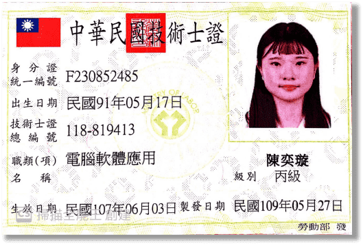

過錯是暫時的遺憾，而錯過則是永遠的遺憾!
電腦軟體應用—丙級
2018/06/03取得
每天放學留下來練習，努力不懈把每個題組練到滾瓜爛熟，才能通過考試
2002.05.17
中原大學資管系
| 基本資料 |
過錯是暫時的遺憾，而錯過則是永遠的遺憾!
| 專業技能 |
HTML
CSS
文書處理
簡報製作
| 程式技能 |
VB
Java
C#
JavaScript
這是我第一份的打工，當時每天都要和客人說話，有時候還會遇到態度很差的，但是經過這次的打工，我才真正體會到賺錢的辛苦
高中時覺得打爵士鼓很酷，因此加入熱音社，雖然不是很厲害，但也能演奏出簡單個歌曲
高二開始當上秩服的幹部，讓我學到團隊合作，也讓我了解時間安排的重要性
其實高中也很想學習跳舞，但因為沒有機會，直到大學才開始學習跳舞，看到自己越來越進步，感到非常開心
| 專業證照 |
2018/06/03取得
每天放學留下來練習，努力不懈把每個題組練到滾瓜爛熟，才能通過考試
2018/06/25取得
利用每節電腦課練習中英打，因為考試時太緊張而結果不如預期
2019/04/08取得
本身英語就不太好，但現今社會注重英語的能力，所以花了不少功夫與時間在準備考試
2020/03/18取得
這次證照與統測範圍一樣，由於平時就盡心竭力的準備會計，才能通過考試
透過這次的活動，讓學習更加有趣並且能增加一些實務的經驗，像是讓顧客增加購買欲望，此次的活動我學習到如何與團隊溝通，並提出自己的意見，如何拉客及義賣時所需要注意的語氣，還有該如何介紹商品，網頁該如何架設，也讓我增加了很多勇氣，比較不害怕被別人拒絕。雖然義賣的錢最終不是進入我們的口袋，但看到所進的貨慢慢地賣出去，直到賣光甚至不夠還要再追加，真的會很開心，而且每拉到一位客人，就會更有信心及成就感，這種能學習到經驗，還能邊幫助人的感覺實在是太好了。
透過這次的服務讓我體會到原來經驗二手店是非常不容易的事，有很多重新翻修的工作，好讓商品可以賣出去，或者運用在製作衣服、包包、帽子等，第一次參訪才知道原來木匠的家有聘用很多弱勢族群，而且把他們像對待一般人一樣，使他們能夠重新找回自信，我覺得是一件很不容易的事。有趣的事當初那邊的志工有提供我們很多如何幫忙協助的方案，還讓我們可以選擇，而不是直接指派，並且透過此次的服務學習，讓我了解到原來一件牛仔褲拆解完能用在這麼多地方，也學到怎麼拆解，是一件很難得的經驗，也讓我體會到助人的快樂。
這次做網頁的時間很趕，但看到網頁做出來的成果，感覺很有成就感，以前高中有上過網頁的東西，但都沒有實際做出來過，這次能有這機會非常開心，雖然做一個網頁所花的時間非常多，透過這次的機會也讓我更了解網頁編排的方法